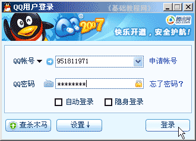
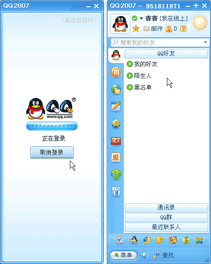

QQ聊天操作基础
三、登录QQ号 返回目录
有了QQ号、安装了QQ软件，就可以开始使用它了，然后可以进行简单的设置，进行聊天的各项准备，下面我们来看一个练习；
1、登录QQ
如果没有安装QQ软件，可以点 http://web.qq.com 通过网页 QQ 直接登录，（或是http://web2.qq.com）；
1）双击桌面的QQ图标运行程序，出来一个登录面板，如果自动运行就不用点桌面图标了；

2）按照从上到下的顺序，输入申请的QQ号，在第二行输入密码，如果是公用的机子，可以点击旁边的小键盘来输入，这个比较安全些；

下面的自动登录和隐身登录可以先不勾，点击“登录”按钮，如果出来安全警报，选择“解除阻止”；
3）然后出来登录面板条，过一会儿就显示登录成功了，面板里有三个组：我的好友、陌生人、黑名单，现在里面还没有添加好友；

面板左边有一列按钮，它们是各个功能按钮，第一个小QQ图标的是聊天功能，可以点击切换看一下；
4）然后会弹出来一个“腾讯迷你网页”，点击右边的叉按钮可以关闭它；

2、常用操作
1）把面板条，拖到屏幕的顶上时，可以自动隐藏，然后把鼠标移过去，又可以自动显示出来；
2）在下边任务栏的最右边，在系统托盘里也有一个QQ图标，点一下左键会出来一个状态菜单，点一下右键会出来一个系统菜单，双击左键会出来QQ长面板；
菜单里有许多命令，根据需要进行选择，常用的是下面的“个人设置”和“工具”菜单；
本节学习了登录QQ的基本方法，以及认识QQ面板的各个按钮操作，如果你成功地完成了练习，请继续学习下一课内容；
本教程由86团学校TeliuTe制作|著作权所有
基础教程网：http://teliute.org/
美丽的校园……
转载和引用本站内容，请保留版权信息和本站链接。